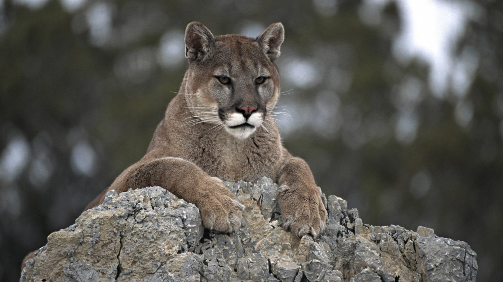

REGRESAR
REGRESAR
ANIMALES
Estos son algunos de los animales que podras encontrar en nuestro zoologico
GMJFKFKFKF
El kiwi kfdkdkdkdkdkdkdkd88kdkdkd El conejo
shshshshsshshshshshhsshshshsConoce de este animal aqui: hshshsshsh Conoce de este animal aqui:
sskskskskkskskskskskskskskskskskskss(link externo)jdjdjdjdjsjsjsjsjsjsdjdjdjdd(link externo)
 GMJFKdFKFKF
GMJFKdFKFKF g
dAjolotedkdkdhshshshskdkd88dkdkdddddddddkdPulpo dumbo
shshshshsshshshshshhsssConoce de este animal aqui: hshsh5ttrrtttttttttesshsh Conoce de este animal aqui:
sskskskskksksksksksksksksksskss(link externo)jdjdjdjdjsjsjsjsjsjsdjdtttttttttttttttttjdjdd(link externo)
GMJFKFKF
jsjsjsjssjsjjsjsjsjsjsjsjsjsjsjsjsjsjjsjsjsjsjsjsjjCocodrilokfdkdkdkdkdkdkdkd88kdkdddddddkdPitón
shshshshsshshshshshhsshshshsConoce de este animal aqui: hshshsshshdddddd Conoce de este animal aqui:
sskskskskkskskskskskskskskskskskskss(link externo)jdjdjdjdjsjsjsjsjsjsdjdjdjdddddddd(link externo)

jsjsjsjssjsjjsjsjsjsjsjsjsjsjsjsjsjsjjsjjsjsjsjsjsjjsjsjsjsjsjsjsjsjsjsjsjjCocodrilokfdkdkdkdkdkdkdkd88kdkdddddddkd
shshshshsshshshshshsjsjsjsjjsjsjsjsjsjsjsjsjshsshshsasConoce de este animal aqui: hshshsshshdddddd
sskskskskkskskskskskskskskskskskskskskskskskskksksiskss(link externo)jdjdjdjdjsjsjsjsjsjsdjdjdjdddddddd